Manual de usuario detallado appTrackingPaquetesAPA
Guia practica para usar el sistema de control y seguimiento interno de paquetes. Esta version incluye capturas reales tomadas del frontend funcionando.
SistemaappTrackingPaquetesAPA
Fecha de generacion14 de junio de 2026 a las 2:48 p. m.
Frontendhttp://localhost:4300
Usuario demosistemas@pajaroazul.com
Este manual esta escrito en lenguaje claro. La idea es que una persona que sabe leer pueda seguir los pasos, y que un gerente tambien pueda entender el valor operativo y de control de cada pantalla.
Indice
Para que sirve el sistema
Roles y permisos
Reglas basicas de uso
Inicio de sesion
Dashboard
Menu lateral
Paquetes
Registrar paquete
Consolidar paquetes
Detalle e impresion
Seguimiento
Problemas e incidencias
Comprobantes y evidencias
Personal, ubicaciones y estados
Informes
Errores comunes
Buenas practicas
1. Para que sirve el sistema
appTrackingPaquetesAPA sirve para registrar paquetes internos, darles seguimiento por numero de guia, consultar su estado, reportar problemas, subir comprobantes y revisar informacion administrativa.
Una guia es el codigo que identifica un paquete. El formato actual es APA-000001. La guia la genera el sistema; el usuario no debe escribirla manualmente.
Idea sencilla: si el paquete fuera una persona en una fila, la guia seria su numero de turno. Con ese numero se puede encontrar rapidamente en el sistema.
2. Roles y permisos
Elemento
Explicacion sencilla
Uso para supervision o gerencia
Administrador
Puede revisar y administrar casi todo el sistema.
Permite control de usuarios, catalogos, reportes y supervision general.
Usuario
Puede registrar y consultar paquetes segun permisos.
Sirve para operacion diaria en oficina, bodega o departamento.
Motorista
Puede consultar paquetes asignados y registrar avances.
Apoya el control de entrega y trazabilidad de movimientos.
3. Reglas basicas de uso
No comparta su usuario ni contrasena.
Revise bien origen, destino, remitente y destinatario antes de guardar.
Use descripciones claras. Ejemplo: Factura original de proveedor, no solo Documento.
Si hay un problema, registre una incidencia.
Si tiene una foto, PDF o comprobante, subalo como evidencia.
Al terminar, cierre sesion desde la burbuja inferior del usuario.
Inicio de sesionPantalla donde el usuario ingresa sus credenciales para entrar al sistema.
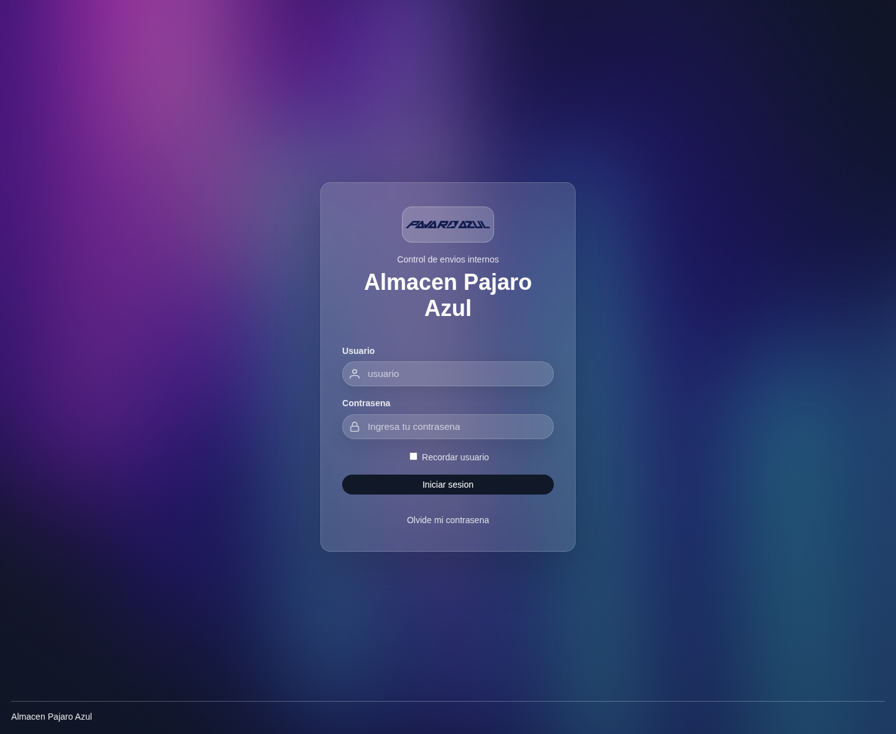
123
1. Campo para escribir correo o usuario.
2. Campo para escribir la contrasena.
3. Boton para entrar al sistema.
4. Como iniciar sesion
Abra el navegador.
Entre a http://localhost:4300/login.
Escriba el correo asignado.
Escriba la contrasena.
Presione el boton de inicio de sesion.
Si los datos son correctos, vera la pantalla de inicio o dashboard.
Dashboard o pantalla de inicioResumen rapido de la operacion. Ayuda a ver cantidad de paquetes, problemas y comprobantes.
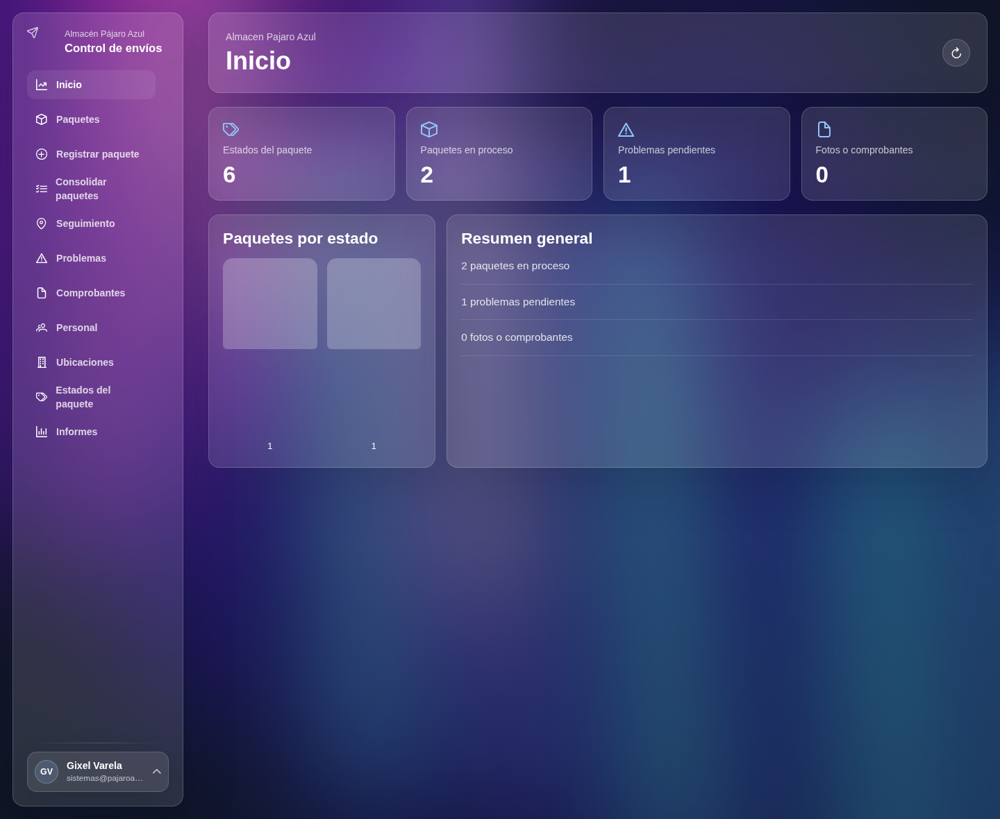
123
1. Menu lateral con todas las pantallas principales.
2. Tarjetas con indicadores principales.
3. Resumen y distribucion de paquetes.
5. Como leer el dashboard
Para una persona operativa, esta pantalla responde: cuantos paquetes hay, cuantos problemas existen y si hay comprobantes cargados.
Para gerencia, esta pantalla sirve como vista rapida de volumen de trabajo, incidencias pendientes y actividad general.
Listado de paquetesPantalla principal para consultar paquetes, buscar por guia y abrir detalle o seguimiento.
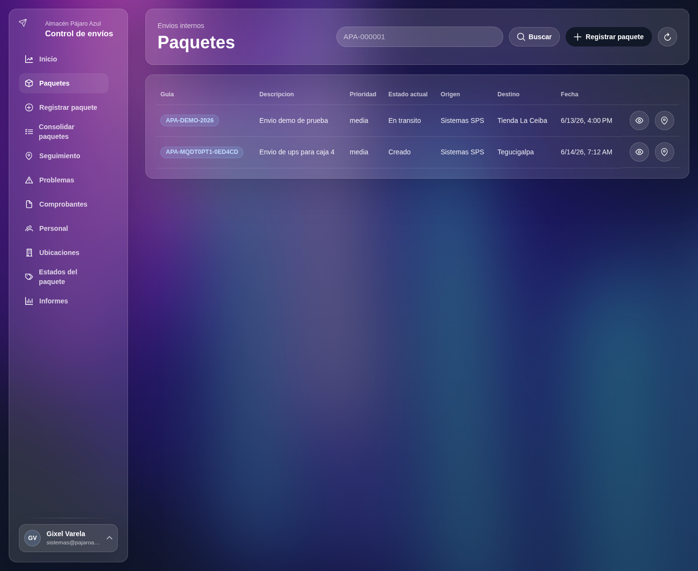
1234
1. Titulo de la pantalla.
2. Buscador por numero de guia.
3. Acciones para registrar o actualizar.
4. Acciones por paquete: detalle y seguimiento.
6. Paquetes
Entre al menu Paquetes.
Revise la lista de paquetes registrados.
Para buscar un paquete, escriba una guia como APA-DEMO-2026.
Use Ver detalle para revisar toda la informacion.
Use Seguimiento para ver los movimientos del paquete.
Registrar paquete individualFormulario para crear un solo paquete.
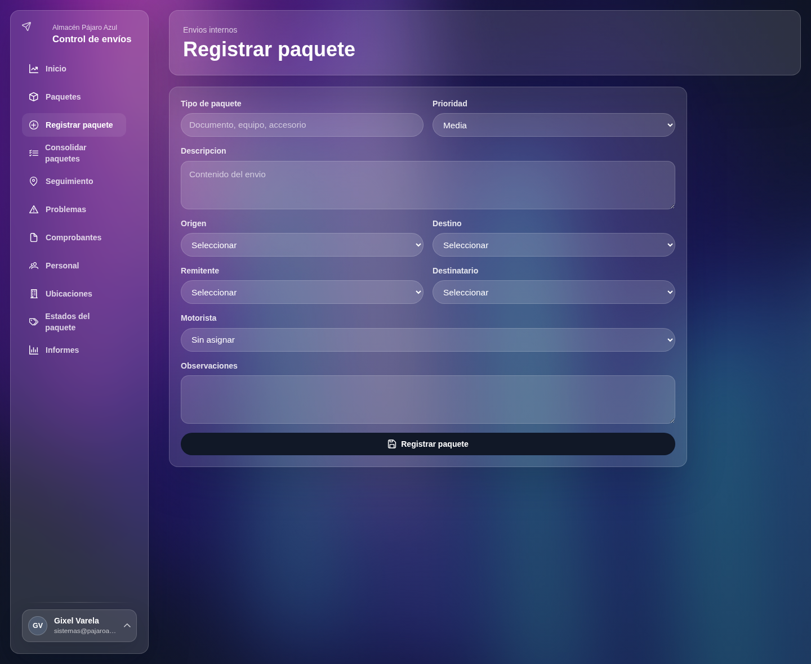
123
1. Tipo, prioridad y descripcion.
2. Origen, destino, remitente y destinatario.
3. Boton para registrar el paquete.
7. Registrar un paquete
Presione Registrar paquete.
Seleccione tipo de paquete y prioridad.
Escriba una descripcion clara.
Seleccione origen y destino.
Seleccione remitente y destinatario.
Seleccione motorista si aplica.
Presione Registrar paquete.
El sistema guarda el paquete y genera su guia automaticamente.
Consolidar paquetesPantalla para armar una lista temporal y guardar varios paquetes al final.
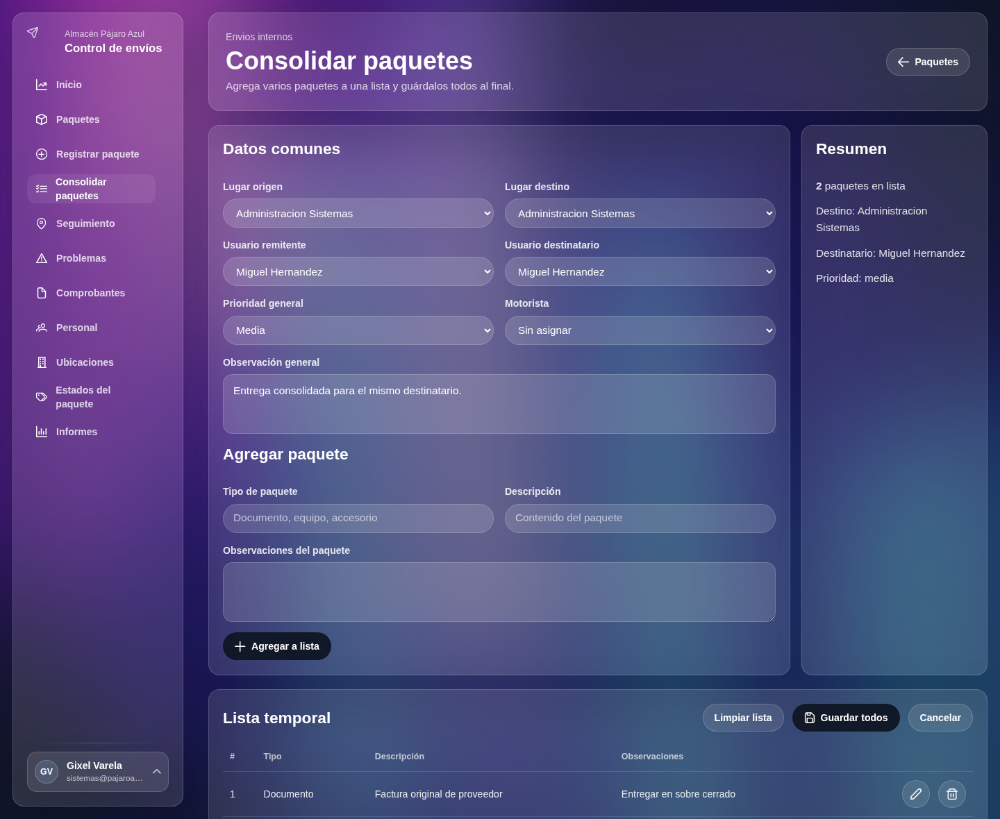
1234
1. Datos comunes para todos los paquetes del lote.
2. Formulario para agregar cada paquete a la lista.
3. Resumen del lote temporal.
4. Tabla temporal: se puede editar, quitar o guardar todo.
8. Consolidar paquetes
Use esta pantalla cuando varios paquetes comparten datos, por ejemplo mismo destino y mismo destinatario. El sistema no guarda nada en MongoDB mientras usted solo agrega a la lista temporal.
Seleccione los datos comunes: origen, destino, remitente, destinatario y prioridad.
Escriba tipo, descripcion y observaciones del primer paquete.
Presione Agregar a lista.
Repita el proceso para cada paquete adicional.
Revise la tabla temporal.
Si un dato esta mal, use Editar. Si no debe ir, use Quitar.
Presione Guardar todos cuando la lista este correcta.
El backend crea cada paquete por separado y genera una guia para cada uno.
Ejemplo: si guarda tres paquetes, el sistema puede responder con APA-000001, APA-000002 y APA-000003. Cada guia se puede buscar despues en Paquetes o Seguimiento.
Detalle del paqueteVista completa de un paquete ya registrado.
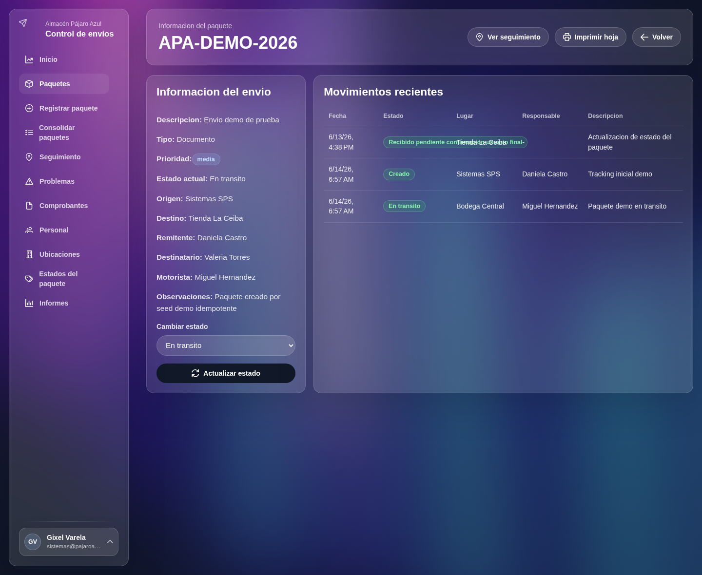
123
1. Numero de guia y datos principales.
2. Accesos para seguimiento o impresion.
3. Datos operativos del envio.
9. Detalle del paquete
El detalle sirve para confirmar toda la informacion de un paquete. Desde aqui se puede revisar la guia, prioridad, origen, destino, usuarios relacionados y observaciones.
Hoja imprimibleFormato limpio para imprimir la hoja de envio interno.
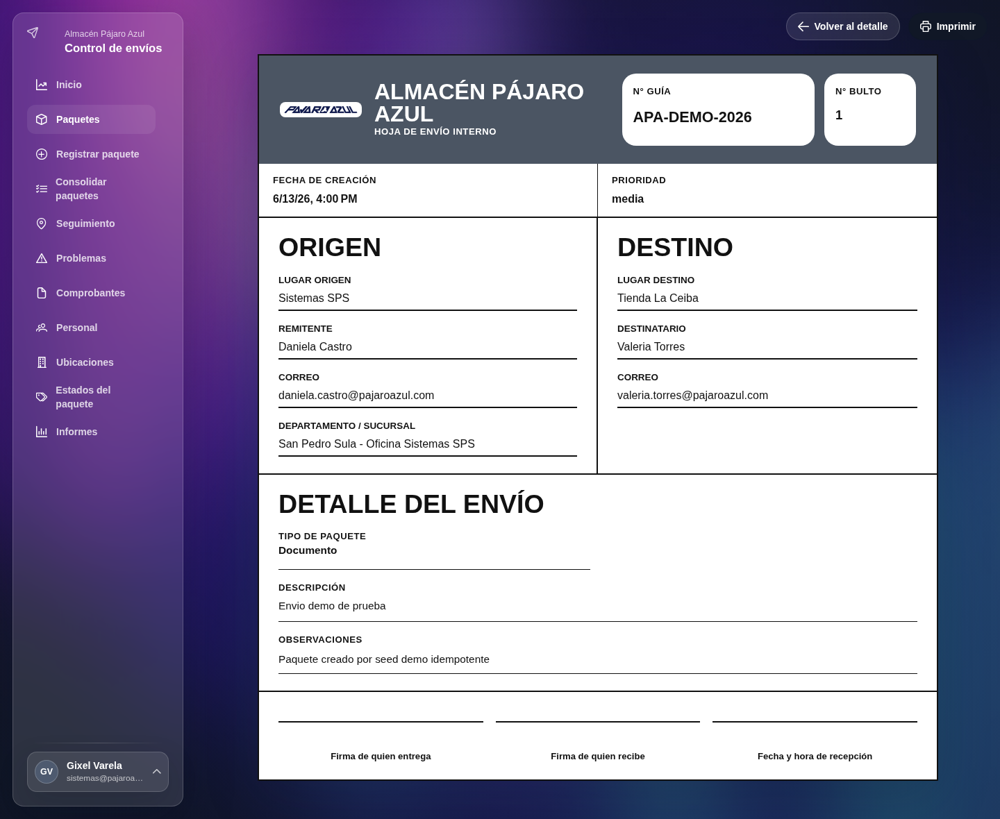
123
1. Encabezado con logo y guia.
2. Datos de origen y destino.
3. Detalle del envio y firmas.
10. Imprimir hoja de envio
Abra el detalle del paquete.
Presione la opcion de impresion si esta disponible.
Revise que la guia, origen, destino y descripcion sean correctos.
Presione Imprimir.
En la impresion no deben salir menu lateral ni botones del sistema.
Seguimiento por guiaHistorial de movimientos del paquete.
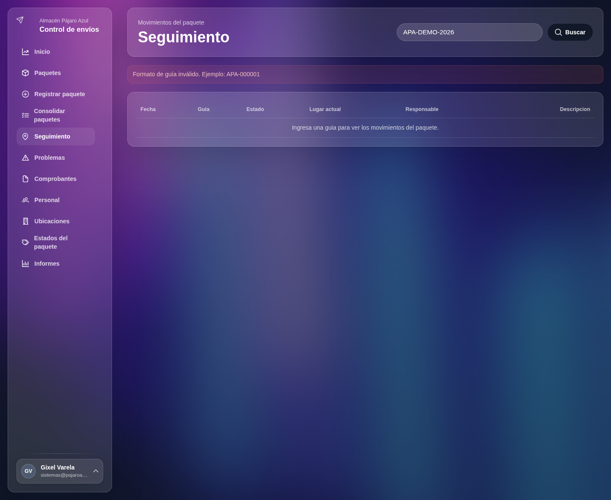
1234
1. Campo para buscar por guia.
2. Fecha del movimiento.
3. Estado y ubicacion del paquete.
4. Descripcion del evento.
11. Seguimiento
Seguimiento responde a la pregunta: que ha pasado con este paquete. Cada movimiento queda ordenado por fecha.
Entre a Seguimiento.
Escriba una guia, por ejemplo APA-DEMO-2026.
Presione Buscar.
Revise la tabla de movimientos.
Problemas o incidenciasPantalla para reportar problemas encontrados con un paquete.
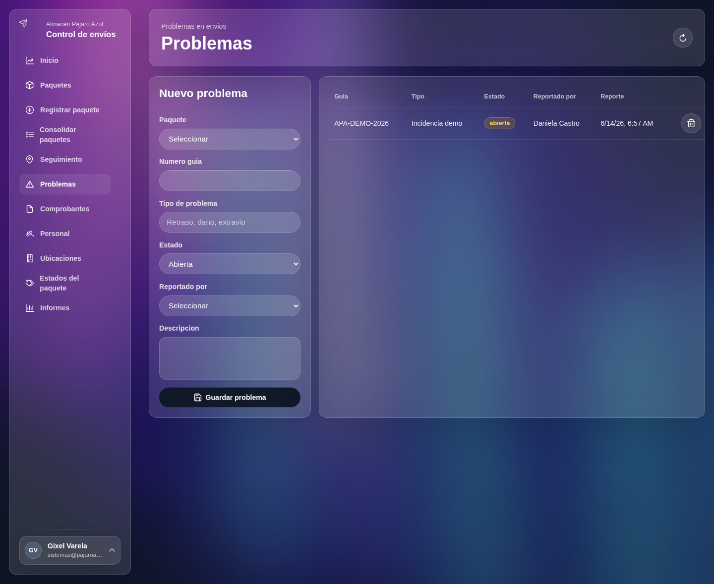
123
1. Formulario o filtros de incidencia.
2. Listado de problemas registrados.
3. Acciones segun permisos.
12. Problemas
Registre una incidencia cuando algo no va normal: paquete demorado, dato incorrecto, entrega incompleta, extravio o dano.
Comprobantes y evidenciasPantalla para consultar o subir archivos relacionados con un paquete.
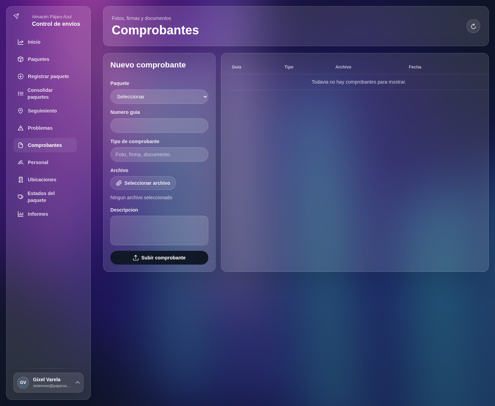
123
1. Datos para asociar evidencia al paquete.
2. Listado de comprobantes existentes.
3. Carga o descarga de archivos.
13. Comprobantes
Use comprobantes para respaldar una entrega, un problema o una recepcion. Los archivos permitidos son JPG, JPEG, PNG y PDF, con limite de 5 MB.
PersonalAdministracion de usuarios del sistema.
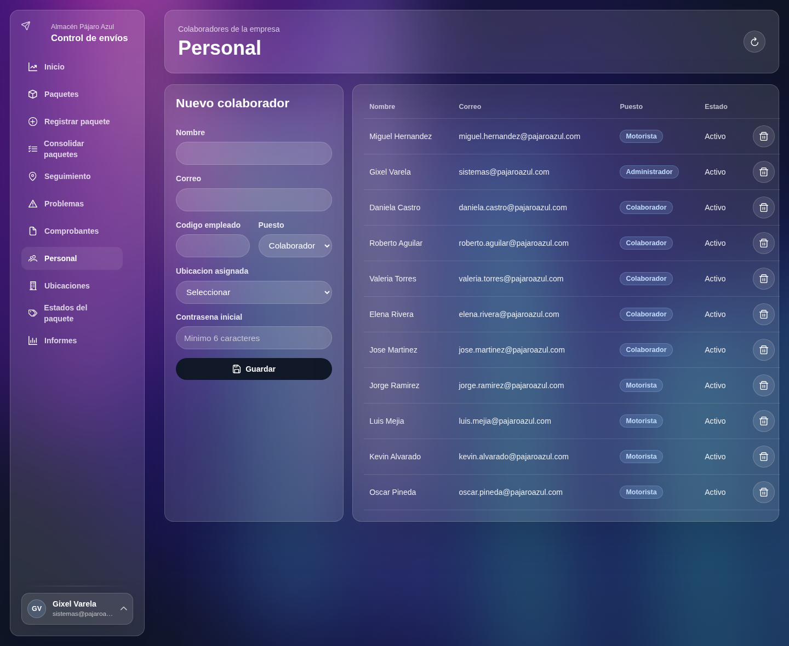
123
1. Formulario o resumen de usuario.
2. Lista de personal registrado.
3. Acciones de mantenimiento.
UbicacionesCatalogo de sucursales, bodegas o departamentos.
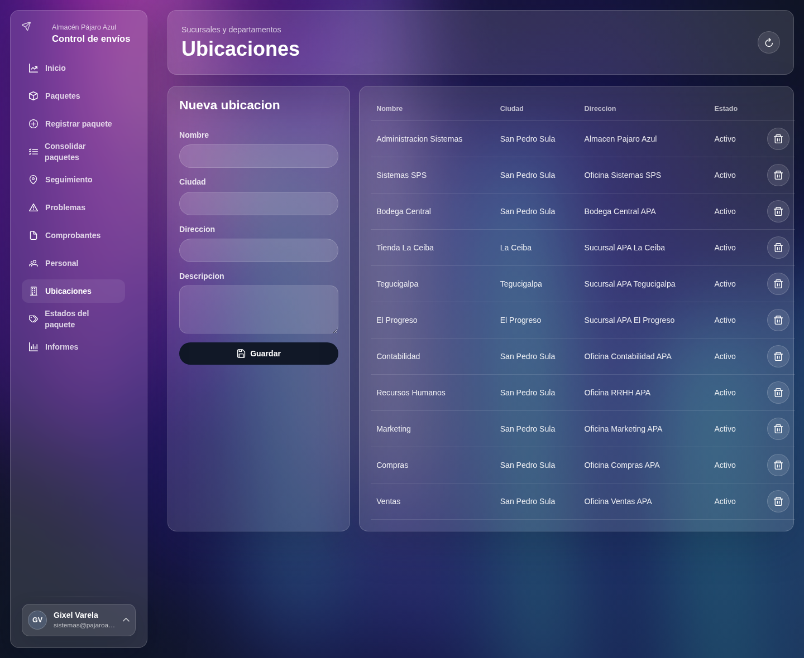
12
1. Datos de la ubicacion.
2. Listado de ubicaciones.
Estados del paqueteCatalogo de etapas que puede tener un paquete.
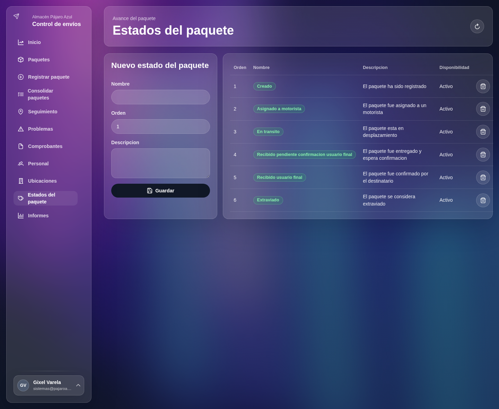
12
1. Nombre y orden del estado.
2. Listado de estados configurados.
14. Personal, ubicaciones y estados
Estas pantallas son de mantenimiento. Mantenerlas ordenadas ayuda a que los paquetes tengan datos correctos desde el registro.
Elemento
Explicacion sencilla
Uso para supervision o gerencia
Personal
Registra usuarios, motoristas y administradores.
Controla quienes pueden entrar y que rol tienen.
Ubicaciones
Registra lugares de origen, destino o trabajo.
Permite analizar movimientos por area o sucursal.
Estados
Define etapas del paquete.
Estandariza el seguimiento y evita nombres distintos para el mismo estado.
InformesPantalla para consultar salidas administrativas.
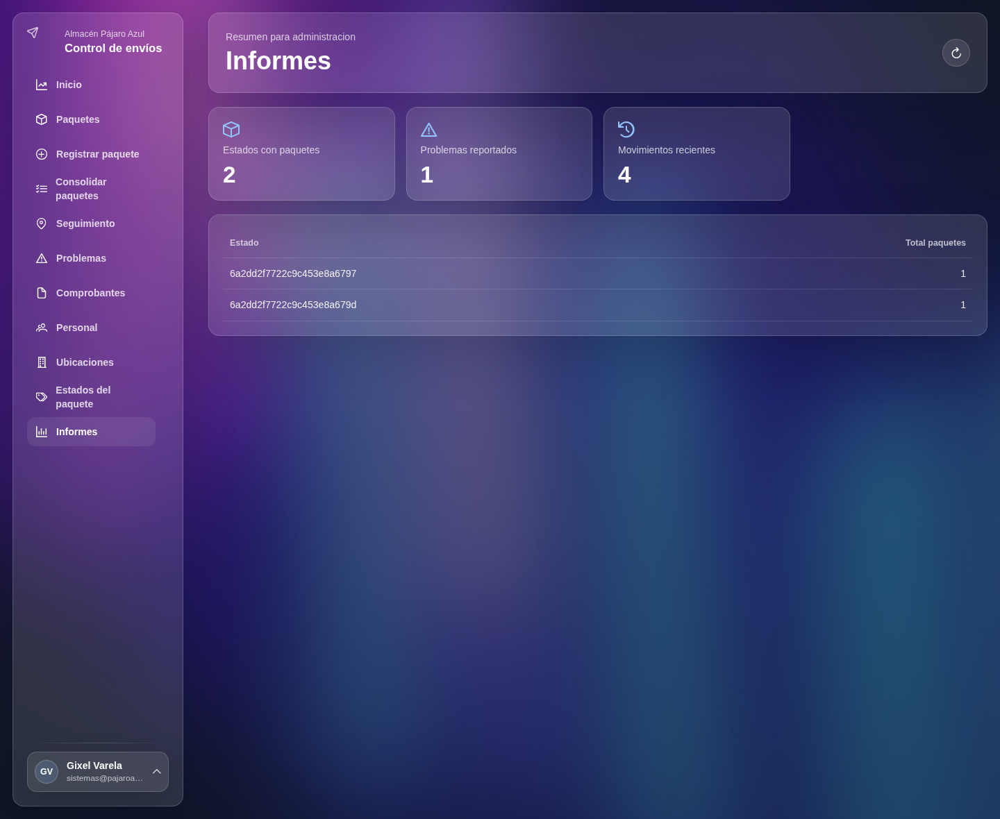
12
1. Resumen de reportes disponibles.
2. Resultados de paquetes, incidencias o actividad.
15. Informes para supervision
Los informes sirven para revisar datos agrupados. Para un gerente, esta pantalla ayuda a detectar volumen de paquetes, problemas pendientes y actividad reciente.
16. Errores comunes y que hacer
Elemento
Explicacion sencilla
Uso para supervision o gerencia
Formato de guia invalido
La guia debe verse como APA-000001.
Evita busquedas sobre codigos viejos o mal escritos.
Datos invalidos
Falta un campo obligatorio o el dato no cumple formato.
Garantiza calidad de datos antes de guardar.
No tiene permisos
El usuario no puede ejecutar esa accion.
Protege operaciones administrativas o sensibles.
Paquete no encontrado
La guia o id no existe para el usuario actual.
Puede indicar error de escritura o falta de acceso.
Archivo no permitido
Solo se aceptan JPG, JPEG, PNG o PDF hasta 5 MB.
Controla riesgos y uso de almacenamiento.
17. Buenas practicas
Para usuarios operativos
Escriba descripciones claras.
Revise destino y destinatario antes de guardar.
Use consolidacion cuando son varios paquetes para la misma persona.
Suba comprobantes cuando exista evidencia util.
Cierre sesion al terminar.
Para supervision y gerencia
Revise dashboard e informes con frecuencia.
Observe incidencias abiertas.
Mantenga usuarios y ubicaciones actualizados.
Pida que cada movimiento importante quede registrado.